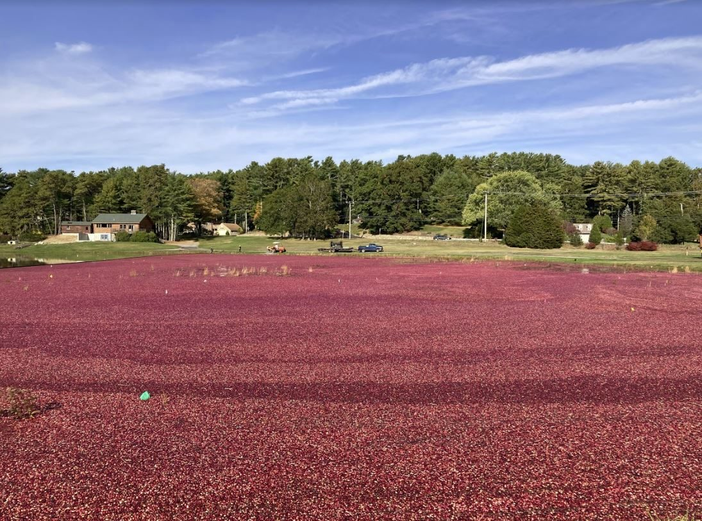

미국 매사추세츠 크랜베리 습지 위 영농형 태양광 2곳, 패널 아래 두 번째 수확…땅·설비는 개발사 소유, 영농형엔 1kWh당 9센트 더 줘

킹스턴 4.4MW(배터리 13.5MWh)·플리머스 1MW, 농사 그만두려던 농민 땅을 개발사가 사들여 공동체 태양광으로 전기 판매…습지에 맞춰 기초 깊게 박고 패널은 10피트 높이에
미국 매사추세츠주 남동부 킹스턴과 플리머스의 크랜베리 습지 2곳에 세운 영농형 태양광 아래에서 올가을 두 번째 크랜베리 수확이 이뤄졌으며, 가동 중인 태양광 아래에서 크랜베리를 기르는 미국 첫 사례다. 킹스턴은 4.4MW 태양광에 13.5MWh 배터리, 플리머스는 1MW 태양광이며, 두 곳 모두 '공동체 태양광' 방식으로 더 싼 요금과 재생에너지를 원하는 이용자에게 전기를 판다. 다만 사업의 주인은 농민이 아니라 개발사로, 청정에너지 개발사 그린배커 리뉴어블스(Greenbacker Renewables)가 수십 년 크랜베리를 기르던 땅을 농사를 그만두려던 농민들에게서 사들였고, 디스트리뷰티드 에너지 인프라스트럭처(Distributed Energy Infrastructure)가 지었으며, 지역의 오랜 크랜베리 농민이자 태양광 컨설턴트인 이언 워드(Iain Ward)가 고용돼 재배를 맡는다. 매사추세츠는 2018년 영농형 태양광에 지원을 더 얹은 첫 주로, 주 태양광 지원제도에서 1~5MW 설비는 1kWh당 기본 23.17센트를 받고 영농형은 9센트를 더 받는다. 습지에서는 보통 8~10피트인 기초를 훨씬 깊이 박아야 했고 배선은 땅에 묻지 못해 위로 걸었으며, 패널은 땅에서 10피트 높이에서 해를 따라 기울고 수확 장비가 다닐 수 있게 기둥 간격을 넓혔다. 건설사 공동 설립자 프라틱 타레(Prateek Tare)는 "말 그대로 가능하다는 것을 증명하고 있다"고 했으며, 회사는 사과 과수원·소 목초지·크리스마스트리 농장으로 영농형을 넓히고 있고 인근 카버에서는 5년 전 지어 놓고 사업 회사의 파산으로 멈춘 크랜베리 영농형 2곳을 새 소유주가 마무리할 계획이다.
시민에너지 관점
영농형에 1kWh당 9센트를 더 얹어 주자 농사를 접으려던 습지에서 다시 크랜베리를 거두게 됐다는 것은, 제도 설계가 농지와 발전을 함께 살릴 수 있다는 증거다. 다만 이번 두 곳은 땅과 설비를 개발사가 사들인 사업이어서, 가산 요금의 이익이 농민과 마을에 얼마나 돌아가는지는 따로 따져야 한다. 독일이 2021년 DIN SPEC 91434로 패널 아래 농업이 이어져야 영농형으로 인정하는 기준을 만들었듯 영농 지속 조건은 기본이고, 여기에 누가 소유하느냐는 조건이 더해져야 농촌이 땅을 내주고 임대료만 받는 구조를 피할 수 있다. 국내 영농형 제도도 지원 단가를 정할 때 농민·주민 출자 사업에 우선권을 주어, 농지 위 발전의 이익이 외부 자본이 아니라 농촌에 남게 해야 한다.
출처: Canary Media 2026-11-04 Sarah Shemkus 원문 보기
창간 전 시험 발행 기사입니다.
米マサチューセッツのクランベリー湿地の営農型太陽光2カ所、パネルの下で2度目の収穫…土地と設備は開発会社の所有、営農型には1kWh当たり9セント上乗せ
キングストン4.4MW（蓄電池13.5MWh）・プリマス1MW、農業をやめようとしていた農家の土地を開発会社が買い取りコミュニティー太陽光で電力販売…湿地に合わせて基礎を深く打ち、パネルは10フィートの高さに
米マサチューセッツ州南東部のキングストンとプリマスにあるクランベリー湿地2カ所に設けた営農型太陽光の下で、今秋2度目のクランベリー収穫が行われた。稼働中の太陽光の下でクランベリーを育てる米国初の事例だ。キングストンは4.4MWの太陽光に13.5MWhの蓄電池、プリマスは1MWの太陽光で、2カ所とも「コミュニティー太陽光」方式により、安い料金と再生可能エネルギーを求める利用者に電力を販売する。ただし事業の持ち主は農家ではなく開発会社で、クリーンエネルギー開発会社グリーンバッカー・リニューアブルズ（Greenbacker Renewables）が数十年クランベリーを育ててきた土地を、農業をやめようとしていた農家から買い取り、ディストリビューテッド・エナジー・インフラストラクチャー（Distributed Energy Infrastructure）が建設し、地元の長年のクランベリー農家で太陽光コンサルタントでもあるイアン・ウォード（Iain Ward）が雇われて栽培を担う。マサチューセッツ州は2018年に営農型太陽光への支援を上乗せした最初の州で、州の太陽光支援制度では1～5MWの設備が1kWh当たり基本23.17セントを受け取り、営農型はさらに9セントを受け取る。湿地では通常8～10フィートの基礎をはるかに深く打ち込む必要があり、配線は地中に埋められないため上に架け、パネルは地上10フィートの高さで太陽を追って傾き、収穫機械が通れるよう支柱の間隔を広げた。建設会社の共同創業者プラティーク・ターレ（Prateek Tare）は「文字どおり、できることを証明している」と述べ、同社はリンゴ園や牛の放牧地、クリスマスツリー農園へと営農型を広げており、近隣のカーバーでは5年前に建てられながら事業会社の破産で止まったクランベリー営農型2カ所を新たな所有者が完成させる計画だ。
市民エネルギーの視点
営農型に1kWh当たり9セントを上乗せしたことで、農業をやめようとしていた湿地で再びクランベリーが収穫されるようになったことは、制度設計が農地と発電を共に生かせる証拠だ。ただ今回の2カ所は土地と設備を開発会社が買い取った事業であり、上乗せ料金の利益が農家や地域にどれだけ戻るのかは別に問わなければならない。ドイツが2021年にDIN SPEC 91434で、パネルの下で農業が続いてこそ営農型と認める基準を設けたように、営農継続の条件は基本であり、そこに誰が所有するのかという条件が加わってこそ、農村が土地を差し出して賃料だけを受け取る構造を避けられる。韓国の営農型太陽光制度も支援単価を定める際に農家・住民出資の事業を優先し、農地の上の発電の利益が外部資本ではなく農村に残るようにすべきだ。
出典: カナリー・メディア（Canary Media） 2026-11-04 サラ・シェムカス（Sarah Shemkus） 原文を読む
創刊前の試験発行記事です。
美国马萨诸塞州两处蔓越莓湿地农光互补项目迎来板下第二次采收…土地和设施归开发商所有，农光互补每千瓦时多补9美分
金斯顿4.4MW（配13.5MWh储能）、普利茅斯1MW，开发商买下准备退出种植的农户土地，以社区光伏模式售电…针对湿地加深地基，光伏板架高10英尺
美国马萨诸塞州东南部金斯顿和普利茅斯两处蔓越莓湿地上建设的农光互补光伏下方，今秋迎来第二次蔓越莓采收，这是美国首个在运行中的光伏板下种植蔓越莓的案例。金斯顿项目为4.4MW光伏配13.5MWh储能，普利茅斯项目为1MW光伏，两处都采用"社区光伏"模式，把电卖给希望获得更低电价和可再生能源的用户。不过项目的主人是开发商而非农户：清洁能源开发商Greenbacker Renewables从准备退出种植的农户手中买下种植蔓越莓数十年的土地，由Distributed Energy Infrastructure建设，并聘请当地资深蔓越莓种植户兼光伏顾问伊恩·沃德（Iain Ward）负责种植。马萨诸塞州在2018年成为首个对农光互补项目加码补贴的州，在州光伏激励计划中，1至5MW项目每千瓦时基本电价为23.17美分，农光互补项目再多得9美分。在湿地中，通常打入8至10英尺的地基必须打得更深，电缆无法埋入地下只能架空，光伏板架在离地10英尺处随太阳转动，桩距也加宽，以便采收机械自由通行。建设公司联合创始人普拉蒂克·塔雷（Prateek Tare）说："我们正在用事实证明这是可行的。"该公司正把农光互补扩展到苹果园、牛牧场和圣诞树农场；附近的卡弗有两处5年前已建成、却因项目公司破产而停摆的蔓越莓农光互补项目，新业主计划将其完工。
市民能源视角
对农光互补每千瓦时加补9美分后，原本准备弃耕的湿地重新收获蔓越莓，证明制度设计可以让农地和发电兼得。但这两处项目的土地和设施都由开发商买下，加价电价的收益有多少回到农户和当地，需要另外追问。正如德国在2021年以DIN SPEC 91434规定板下农业必须持续才能认定为农光互补，持续耕作是基本条件，再加上谁拥有项目这一条件，才能避免农村交出土地、只拿租金的结构。韩国的农光互补制度在确定补贴单价时也应优先支持农民和居民出资的项目，让农地上发电的收益留在农村，而不是流向外部资本。
来源: 金丝雀传媒（Canary Media） 2026-11-04 莎拉·谢姆库斯（Sarah Shemkus） 查看原文
本文为创刊前试发行文章。
Two Massachusetts cranberry bogs harvest under solar panels for a second season — land and arrays owned by a developer, with an extra 9 cents per kWh for agrivoltaics
A 4.4MW array with a 13.5MWh battery in Kingston and a 1MW array in Plymouth, on land a developer bought from growers who were leaving farming, sell power as community solar; foundations driven deep into the bog and panels mounted 10 feet up
Cranberries were harvested this autumn for the second season beneath agrivoltaic solar arrays on two cranberry bogs in Kingston and Plymouth in south-eastern Massachusetts, the first bogs in the United States to grow the crop under an operating solar installation. The Kingston project pairs a 4.4MW array with a 13.5MWh battery and the Plymouth project is a 1MW array, and both sell their power under a community solar model to customers seeking lower prices and renewable energy. The projects are owned not by farmers but by a developer: clean energy developer Greenbacker Renewables bought the land, which had grown cranberries for decades, from growers who were ready to leave the business, Distributed Energy Infrastructure built the arrays, and Iain Ward, a longtime local cranberry grower and solar consultant, was hired to manage the crop. In 2018 Massachusetts became the first state to give extra support to dual-use solar, and under its solar incentive programme an array of 1MW to 5MW receives a base rate of 23.17 cents per kilowatt-hour, with agrivoltaic projects getting an additional 9 cents. In the bog, foundations had to go well beyond the usual 8 to 10 feet, wiring that could not be buried was hung overhead, and the panels are mounted 10 feet off the ground on trackers that follow the sun, with pilings spaced farther apart so harvesting equipment can move through. "We are literally proving it can be done," said Prateek Tare, co-founder of the construction company, which is now taking agrivoltaics to apple orchards, a cattle pasture and a Christmas tree farm, while in nearby Carver a new owner plans to finish two cranberry agrivoltaic arrays built five years ago but stalled when the company behind them went bankrupt.
Citizen Energy View
That an extra 9 cents per kilowatt-hour for agrivoltaics has brought cranberries back to bogs whose growers were ready to quit shows that policy design can keep both farmland and power generation alive. But both projects are on land and with equipment bought by a developer, so how much of the premium flows back to farmers and the community is a separate question that must be asked. Just as Germany set a standard in 2021, DIN SPEC 91434, under which a project counts as agrivoltaic only if farming continues beneath the panels, continued farming is the baseline, and a condition on who owns the project must be added if rural areas are not to end up handing over land in return for rent alone. Korea's agrivoltaic rules, too, should give priority to farmer- and resident-funded projects when support rates are set, so that the profits from generation on farmland stay in rural communities rather than going to outside capital.
Source: Canary Media 2026-11-04 Sarah Shemkus Read the original
This article was published during the trial period before launch.